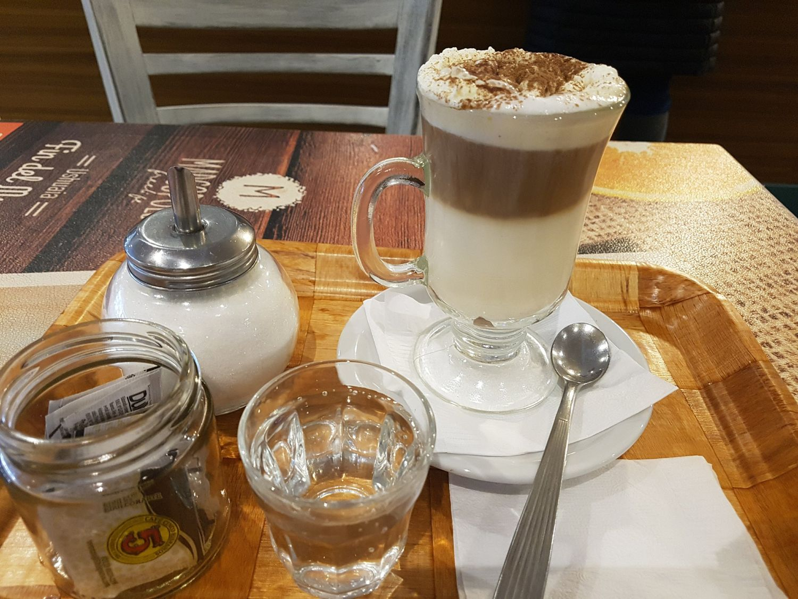

Coffee · Argentina · Ushuaia
Marcopolo, Ushuaia
I had a layered coffee in a café in the centre of Ushuaia on Saturday, October 21, 2017, at 18:23 by my phone's clock. I did not remember the name of the café. This is part of my Ushuaia chapter.
My conclusion up front: my best match is Marcopolo, on Avenida San Martín, but I am not certain. I found it in November 2026 from the location Google Photos stored with the picture, and I could not confirm it from the photo itself.
What the photo shows

The glass has three layers: dark coffee, milk and a top of foam with cocoa powder. It sits on a wooden tray with a sugar dispenser, a glass of water and a jar of sugar sachets. The table mat has a round logo with the letter M and the word Ushuaia, and the rest of its text is cut off by the glass and the dispenser. I did not note what the drink was called or what it cost.
What I found: the photo's location is 54.8075° S, 68.3083° W, which is the code 5MVR+2M3. The Google Maps listing for Marcopolo has the code 5MVR+2M, so they share the same cell, about 14 metres wide. The listing gives the address as Avenida San Martín 746, in the Hotel Cap Polonio, a rating of 4.1 from 1,441 reviews, and a price of "$20,000–30,000" per person (the listing shows only "$", and I take it to be Argentine pesos). It showed the place open and closing at 20:30 on the day I looked. Its menu list includes café con leche and many vegetarian and vegan dishes (google.com/maps).
What I did not find: proof that this is the place. Other restaurants stand within a short walk of the same point, and I did not see the whole table mat. I also do not know whether the café had the same name or owner in 2017, or what the drink in the photo costs today. The listing's reviews are mixed on the food and service.
What I do not remember
I do not remember the name, the order, the price or who I was with. I would go back to the listing and the photo's location, and not to my memory.